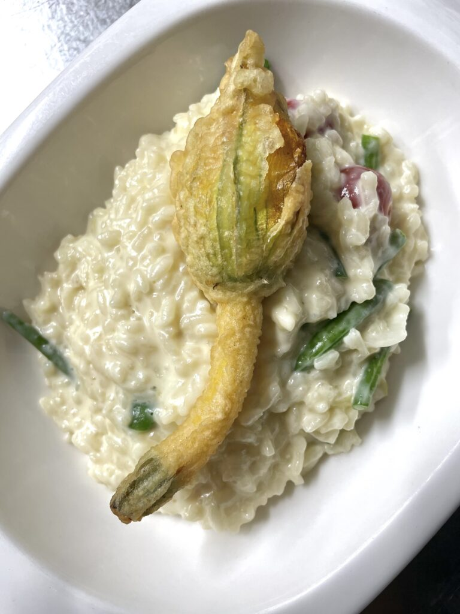
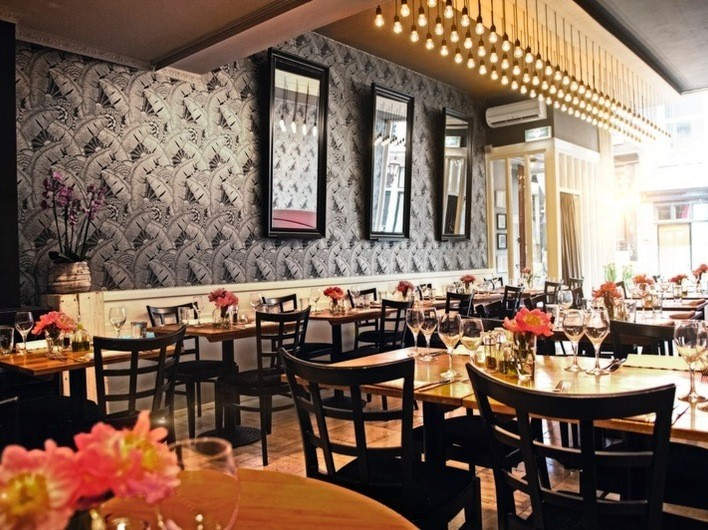
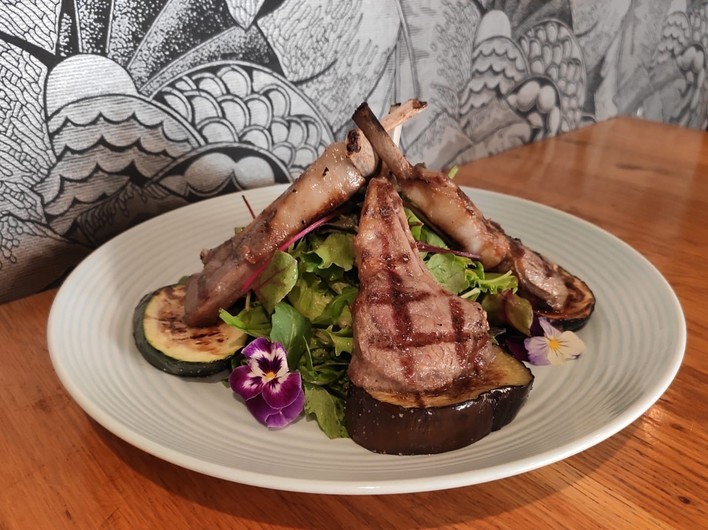
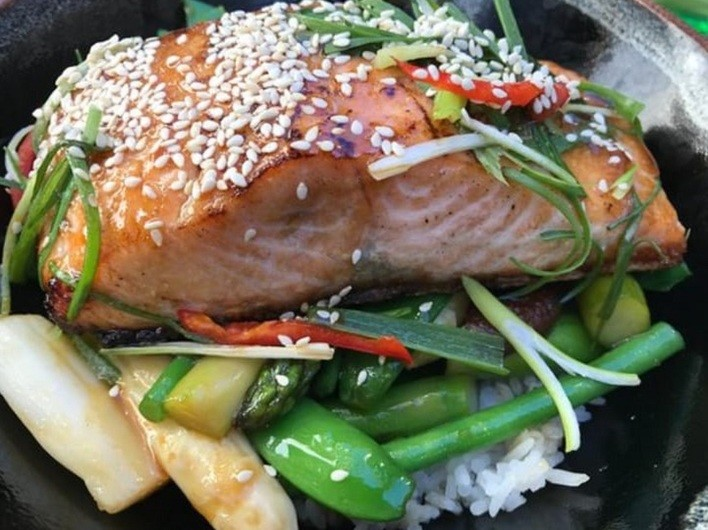

Uit eigen tuin
Onze farm-to-table aanpak betekent dat elk gerecht wordt gemaakt met de verse, lokale en seizoensproducten. De courgettebloemen voor de risotto groeien in onze eigen tuin.
Herenstraat 16, Amsterdam
Een klein, gezellig restaurant aan de Herenstraat, vlak bij de Jordaan. Sinds 2004 wisselen de kaart en de wijnen mee met de seizoenen, met verse producten en een eigen moestuin voor de courgettebloemen.

Kerst en oudejaarsavond: een speciaal feestmenu in twee rondes. Bekijk het menu
Seizoensgebonden, lokaal en vers: dat is de basis van elk gerecht bij Seasons. We houden van eenvoud en echte smaak. Een mooi voorbeeld zijn de courgettebloemen uit onze eigen tuin, voor de risotto met courgettebloem.

Onze farm-to-table aanpak betekent dat elk gerecht wordt gemaakt met de verse, lokale en seizoensproducten. De courgettebloemen voor de risotto groeien in onze eigen tuin.

Veel gerechten zijn glutenvrij of kunnen glutenvrij gemaakt worden, zonder in te leveren op smaak. Zoals ons glutenvrije Rack of Lamb. Op de kaart herken je ze aan GF en kan GF.

Het keukenteam maakt gerechten die een verhaal vertellen, met jaren ervaring en een gedeelde liefde voor eten. In de zaal zorgt een betrokken team voor persoonlijke, oprechte service.
Betaalbare wijnen die, net als de kaart, meewisselen met het seizoen. Per fles en de meeste ook per glas.
fles 31,50 · glas 6,50
Verfrissend mousserend, rijp fruit en citrus
0,75 l 115,00 · 0,375 l 59,00 · 0,2 l 30,00
Sprankelend fruitig, wat body, elegant gerijpt
fles 28,50 · glas 6,25
Licht van kleur, zacht rood fruit, verfrissend
fles 28,50 · glas 6,25
Fris en sappig, exotisch fruit en een vleugje vanille
fles 30,50 · glas 7,00
Fris, tonen van groene appel en gras
fles 32,50 · glas 7,50
Vol, fris en een lange afdronk. Lekker bij Aziatische gerechten
fles 35,50 · glas 7,75
Fruitig, droog en heerlijk bij witte asperges
fles 37,50 · glas 8,00
Vol, wit fruit en mineralen, mooi bij wit vlees en vis
fles 41,50 · glas 8,25
Veel fruit, mooie balans tussen zuur en zoet, elegante afdronk
fles 46,50
Elegant en zuiver, vol met een lange afdronk
fles 28,50 · glas 6,25
Rood fruit, kersen en mediterrane kruiden, lange afdronk
fles 30,50 · glas 7,00
Vol, veel donker fruit en een lange afdronk
fles 32,50 · glas 7,50
Diep rood, rood fruit en makkelijk drinkbaar
fles 35,50 · glas 7,75
Vol, veel fruit, tonen van pruimen en chocolade
fles 35,00 · glas 7,25
Zacht en fruitig, rijp bosfruit, subtiele kruidigheid
fles 46,00 · glas 9,25
Vol, veel rijp rood fruit
fles 47,00
Pruimen en rabarber, veel kruiden, vol met een lange afdronk
fles 48,00
Romig, rijpe tannines, fruit, tonen van paddenstoelen en koffie
fles 51,50
Licht en levendig, kers met een vleugje eik
fles 73,00
Vol, zacht en rijk, zwarte kersen en pruimen
Op de feestdagen serveren we een speciaal menu. Seasons is snel volgeboekt, dus reserveer op tijd.
Eerste ronde17:00 – 18:00
Tweede ronde20:00 – 20:30
Kom je met een grotere groep? Familiediner, bedrijfsfeest, reisbureau of een andere gelegenheid: ook grote groepen zijn welkom.
Reserveer voor de feestdagenReserveer een tafel voor minstens 6 personen en de jarige krijgt een gratis driegangenmenu van ons Chef’s Menu.
Sinds 2004 zit Seasons aan de Herenstraat, in het centrum vlak bij de Jordaan. Steeds meer mensen weten dit kleine, gezellige restaurant te vinden.
Het hele jaar door serveren we verse seizoensgerechten. De kaart volgt de beste producten van het moment, en je stelt zelf je menu van twee of drie gangen samen. Ook de betaalbare wijnkaart wisselt mee met het seizoen.
Het interieur is trendy en klassiek tegelijk: rustieke charme en moderne elegantie. Of je nu komt voor een romantisch diner, een feestje met vrienden of een zakelijk etentje, de ongedwongen sfeer en oprechte service maken er een mooie avond van.
Een mix van bekende ingrediënten met eigen recepten.
020 330 3800
info@seasonsrestaurant.nl
We beantwoorden e-mails na 18:00 uur.